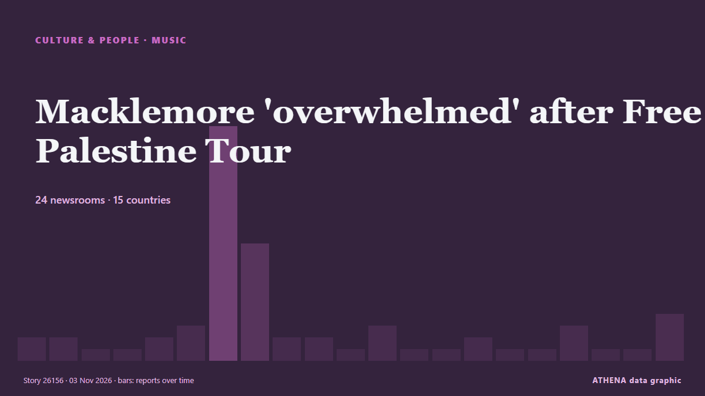

Macklemore 'overwhelmed' after Free Palestine Tour

Macklemore says ‘being human is not complicated’ as he kicked off his Free Palestine tour on Thursday night. من Al Jazeera English
نشرته بشكل مستقل 24 مصدرًا في 15 دولة منذ 23 أكتوبر، وأول من نشره Al Jazeera English؛ والتغطية لا تزال تتسع. تُؤرشف أخبار الرياضة والثقافة دون تقييم للمخاطر. الثقة 92٪ (مرتفعة)، وعدد المصادر المستقلة المؤكِّدة: 24، بمتوسط موثوقية للمصادر يبلغ 76٪. وسائل الإعلام حسب البلد: المملكة المتحدة (10), قطر (4), أيرلندا (4). التغطية: من 23 أكتوبر إلى 3 نوفمبر، 248 ساعة.
ما الذي تغيّر: 3 تقارير جديدة من 3 غرف أخبار خلال 24 ساعة حتى 3 نوفمبر.
العنوان الأول: US rapper Macklemore launches 'Free Palestine Tour'
تُعرض العناوين بالإنجليزية كما نُشرت.
نظرة سريعة
اختير وقُيِّم وكُتب وفق منهجية ATHENA المنشورة. لا يتدخل أي محرر في الأحداث بعينها. كيف يُنتَج ›
| 23 Oct 23:25 UTC | 1 |
|---|---|
| 24 Oct 11:25 UTC | 1 |
| 24 Oct 23:25 UTC | 0 |
| 25 Oct 11:25 UTC | 0 |
| 25 Oct 23:25 UTC | 1 |
| 26 Oct 11:25 UTC | 2 |
| 26 Oct 23:25 UTC | 19 |
| 27 Oct 11:25 UTC | 9 |
| 27 Oct 23:25 UTC | 1 |
| 28 Oct 11:25 UTC | 1 |
| 28 Oct 23:25 UTC | 0 |
| 29 Oct 11:25 UTC | 2 |
| 29 Oct 23:25 UTC | 0 |
| 30 Oct 11:25 UTC | 0 |
| 30 Oct 23:25 UTC | 1 |
| 31 Oct 11:25 UTC | 0 |
| 31 Oct 23:25 UTC | 0 |
| 01 Nov 11:25 UTC | 2 |
| 01 Nov 23:25 UTC | 0 |
| 02 Nov 11:25 UTC | 0 |
| 02 Nov 23:25 UTC | 3 |
لماذا هذه الأرقام
الأهمية
الخطر
الثقة
التغطية — من نشر الخبر ومتى
العنوان كما نُشر · يفتح الأصل- Al Jazeera English · قطرMacklemore: ‘I say free Palestine’ as he kicks off a new tour
- Tehran Times · إيرانMacklemore says ‘being human is not complicated’ as sold-out Gaza benefit tour opens
- Gulf News · الإمارات العربية المتحدةMacklemore calls for 'free Palestine' at first show since Ed Sheeran tour exit
- RTÉ News · أيرلنداHozier and Kneecap join Macklemore for Free Palestine gig
- Free Malaysia Today · ماليزياMacklemore launches ‘Free Palestine Tour’ after Ed Sheeran fallout
- The New Arab · INTUS rapper Macklemore launches 'Free Palestine Tour'
- CNA (Channel NewsAsia) · سنغافورةUS rapper Macklemore launches 'Free Palestine Tour' after Ed Sheeran fallout
- NBC News (World) · الولايات المتحدةMacklemore kicks off sold out ‘Free Palestine’ tour in Dublin
- Arab News · المملكة العربية السعوديةUS rapper Macklemore launches ‘Free Palestine Tour’ after Ed Sheeran fallout
- TheJournal.ie · أيرلندا‘It’s been a crazy six weeks’: Hozier and Kneecap join Macklemore for 'Free Palestine' Dublin gig
- The Straits Times · سنغافورةMacklemore vows to fight until 'last breath' at opening of 'Free Palestine' tour
- Al-Monitor · الولايات المتحدةMacklemore vows to fight until 'last breath' at opening of 'Free Palestine' tour
- The Jerusalem Post · إسرائيلMacklemore vows to fight until 'last breath' at opening of 'Free Palestine' tour
- Al Jazeera English · قطرMacklemore opens ‘Free Palestine’ tour in Dublin
- Gulf News · الإمارات العربية المتحدةMacklemore Free Palestine concert: Mark Ruffalo, Cynthia Nixon and more join Dublin kick-off
- Express Tribune · باكستانMacklemore vows to fight until 'last breath' at opening of 'Free Palestine' tour
- IOL · جنوب أفريقياUS rapper Macklemore launches ‘Free Palestine’ tour after being dropped from Ed Sheeran shows
- Middle East Eye · INTMacklemore kicks off 'Free Palestine' tour, calls for 'shared humanity'
- Asharq Al-Awsat (English) · المملكة العربية السعوديةMacklemore Vows to Fight Until ‘Last Breath’ at Opening of ‘Free Palestine’ Tour
- Evening Standard (London) · المملكة المتحدةMacklemore defends 'Free Palestine' comments as he kicks off Gaza solidarity tour after Ed Sheeran row
- Arab News · المملكة العربية السعوديةDeafening cheers in Dublin as Macklemore kicks off ‘Free Palestine’ tour
- Belfast Telegraph · المملكة المتحدةMacklemore delivers speech about power of music at first Free Palestine gig
- Evening Standard (London) · المملكة المتحدةMacklemore delivers speech about power of music at first Free Palestine gig
- Anadolu Agency (English) · تركياHozier, Kneecap join Macklemore at sold-out launch of Free Palestine tour
- Middle East Eye · INTBritish politicians defend Macklemore and reject push to ban him from UK
- France 24 English · فرنساAmerican rapper Macklemore begins 'Free Palestine' tour
- Belfast Telegraph · المملكة المتحدةMacklemore on Free Palestine Tour: ‘I called a lot of people... you know who picked up that phone right away? Kneecap and Hozier’
- Evening Standard (London) · المملكة المتحدةJack Antonoff says Ed Sheeran should have 'cancelled' tour rather than drop Macklemore
- TheJournal.ie · أيرلنداMacklemore’s Dublin gig puts international spotlight on Ireland
- The New Arab · INTMark Ruffalo sends 'free Palestine' message to Macklemore show
- Belfast Telegraph · المملكة المتحدةMacklemore: Free Palestine show was ‘one of most beautiful moments’ of my life
- Evening Standard (London) · المملكة المتحدةMacklemore: Free Palestine show was ‘one of most beautiful moments’ of my life
- TheJournal.ie · أيرلنداMacklemore says Dublin Free Palestine gig was ‘one of the most beautiful moments’ of his life
- Ada Derana · سريلانكاMacklemore begins Free Palestine tour after Ed Sheeran fallout
- Evening Standard (London) · المملكة المتحدةMacklemore says he has ‘endless love’ for supporters of Free Palestine tour
- Belfast Telegraph · المملكة المتحدةMacklemore says he has ‘endless love’ for supporters of Free Palestine tour
- Al Jazeera English · قطرFans voice support on final night of Macklemore’s ‘Free Palestine’ tour
- Al Jazeera English · قطرMacklemore concludes ‘Free Palestine’ tour with solidarity message
- Haaretz (English) · إسرائيلA full house for 'Free Palestine': Macklemore wraps up solidarity tour in London
- Evening Standard (London) · المملكة المتحدةMacklemore ‘overwhelmed with gratitude’ after Free Palestine Tour